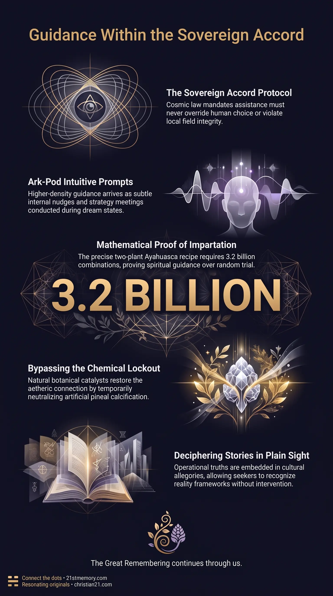

Architecture of Subtle Help
Architecture of Subtle Help — Non-overt assistance stays inside field law so choice and consequence still arise from within.
Subtle Help is the legal framework of non-overt, indirect assistance provided by benevolent soul family and positive extraterrestrial intelligence to incarnated consciousness within a closed simulation field.
Test your understanding of Subtle Help — non-overt assistance that stays inside field law so choice and consequence still arise from within.

Architecture of Subtle Help — Non-overt assistance stays inside field law so choice and consequence still arise from within.

The cosmic loophole of subtle help — Dream states, botanical catalysts, and intuitive prompts carry support without overriding the field from outside.

The Architecture of Subtle Help — Pineal hardware, plant sacraments, and stories in plain sight keep awakening self-sustained under the Sovereign Accord.
Subtle Help is the legal framework of non-overt, indirect assistance provided by benevolent soul family and positive extraterrestrial intelligence to incarnated consciousness within a closed simulation field. Bound by cosmic law, external forces cannot directly breach or manipulate the physical realm from the outside once coherent structures have achieved self-sustaining harmonics. Instead, assistance is strictly restricted to subtle channels—such as botanical synergy, subconscious dream states, intuitive thought prompts, higher-density guidance, and allegorical narratives embedded within public culture—ensuring that choice and consequence always originate from within the individual. This non-infringing methodology allows benevolent allies to offer vital support, preserve spiritual continuity, and facilitate awakening without violating field integrity or causing mission failure.
Strict Legal Boundaries of Non-Override: Benevolent entities adhere absolutely to field law; direct physical intervention or external overt displays are strictly prohibited because they would override local reality harmonics and invalidate human free will.
Botanical Impossibility and Spiritual Impartation: The discovery of the two-plant Ayahuasca brew out of more than 80,000 Amazonian plant species is mathematically impossible through random trial-and-error—requiring nearly 3.2 billion paired combinations and up to one million years of testing—proving that the precise recipe was imparted directly by plant consciousness and spiritual guidance through dream states.
The Endogenous Key and Fluoride Lock: Human biology was built with an internal portal mechanism—the pineal gland—capable of producing endogenous DMT to connect with aetheric reality; systematic water fluoridation was introduced specifically as a chemical lock to calcify this hardware and enforce spiritual amnesia.
Multi-World Spiritual Infrastructure: The vision of a cross-legged woman in the jungle (Pachamama) or ancestral animal spirits experienced during shamanic ceremonies is not a random hallucination, but a standardized interface to advanced spiritual technology maintained by positive soul family across 177 surrounding worlds.
Voluntary Pre-Incarnative Amnesia: Incarnated souls consciously agreed prior to mission insertion to have their memories of light-form communications and dream-state strategy meetings erased upon waking, protecting the avatar from third-density cognitive overload and targeted field sabotage.
Benevolent intelligence communicates primarily through subtle internal channels that align seamlessly with human thought processes. Rather than projecting audible external commands, higher-density allies—including an avatar's own oversoul positioned in an Ark-Pod—transmit subtle nudges, flashes of insight, and feelings of resonance that the waking mind perceives as its own internal reasoning. During sleep cycles, incarnated souls enter light-form states to conduct strategy meetings with soul family. Upon return to the physical avatar, these exchanges are translated into symbolic dreams or filtered out of conscious recall entirely; this deliberate memory wipe prevents third-density psychological strain and protects operational security within the simulation.
The physical delivery of subtle help through plant sacraments relies on an intricate, multi-component chemical mechanism. The brew combines the stems of the Banisteriopsis caapi vine with the leaves of the Psychotria viridis shrub. Under normal digestive conditions, human monoamine oxidase (MAO) enzymes immediately break down orally ingested N,N-Dimethyltryptamine (DMT) before it can reach brain tissue. The Banisteriopsis caapi vine supplies beta-carboline alkaloids—specifically harmine, tetrahydroharmine, and harmaline—which function as reversible monoamine oxidase inhibitors (MAOIs). These alkaloids temporarily deactivate stomach enzymes, allowing active DMT from the Psychotria viridis leaves to enter the bloodstream, cross the blood-brain barrier, and unlock higher-density perception.
The Amazon rainforest contains approximately 80,000 cataloged plant species, creating a pool of nearly 3.2 billion potential two-plant combinations. Testing every pair through trial-and-error at an aggressive rate of 200 tests daily would require at least 43,835 years. Accounting for realistic variables—such as lethal toxicity in dozens of species, required multi-hour boiling preparation, exact plant ratios, and small tribal populations—random discovery would take between 100,000 and one million years. Indigenous shamans consistently reject trial-and-error explanations, confirming that plant spirits communicated the exact pairing, preparation, and cooking methods through altered states and dream communion.
The human pineal gland serves as organic spiritual hardware designed to secrete endogenous DMT, enabling direct telepathic communication, aetheric connection, and multidimensional data downloads. To neutralize this natural capability, custodial forces instituted widespread water fluoridation. Fluoride concentrates in the pineal gland, causing rapid calcification that restricts endogenous DMT secretion to trace amounts. This synthetic lockout disables innate telepathy, forcing humans to rely on external physical technology like the World Wide Web while replacing true aetheric oneness with counterfeit religious systems.
Subtle help is frequently embedded within popular culture, literature, and screenplays as stories in plain sight. Positive forces utilize creative resonance to broadcast key operational truths through allegorical media, allowing seekers to recognize reality frameworks without triggering field violations. For instance, narratives like Stargate SG-1 depict advanced, benevolent extraterrestrials posing as animal spirits (such as wolves or ravens) to protect indigenous human populations without overriding their cultural evolution. Similarly, television series such as Manifest encode real mechanics of portal travel and temporal displacement, offering subconscious prompts that assist in consciousness retrieval.
Relationship to Field Law: Subtle help operates in direct compliance with the Sovereign Accord, serving as the exclusive legal window through which positive off-world intelligence can support trapped souls.
Interconnection with the Pineal Hardware: Shamanic plant sacraments like Ayahuasca temporarily bypass the artificial pineal calcification barrier, flooding the brain with exogenous DMT to restore the natural aetheric connection normally blocked by water fluoridation.
Lateral Alignment with Plane Architecture: The standardized spiritual interface experienced during sacrament consumption connects directly to multidimensional technology anchored across the 178 worlds housed within the Great Dome.
Interfacing with Mission Insertion: Subtle guidance during dreamtime and subconscious prompts continuously direct the 4,000 original souls toward operational milestones and essential awakenings without compromising physical avatar safety.
Bypassing Synthetic Controls: Utilizing natural botanical catalysts and cultivating pineal awareness allows individuals to bypass synthetic frequency locks, artificial noise, and social choice architecture.
Reclaiming Telepathic Continuity: De-calcifying the pineal gland and activating endogenous DMT production restores organic telepathy, reconnecting incarnated avatars directly with their soul family and higher self guidance.
Deciphering Cultural Allegories: Recognizing the framework of subtle help enables individuals to extract vital operational intelligence embedded within media, myths, and stories in plain sight, accelerating personal awakening.
Sustaining Field Sovereignty: Adhering to the non-overriding principles of subtle help ensures that individual awakening remains legally sound, self-sustained, and immune to external field collapse or parasitic exploitation.
This topic is free to share. Support the archive →